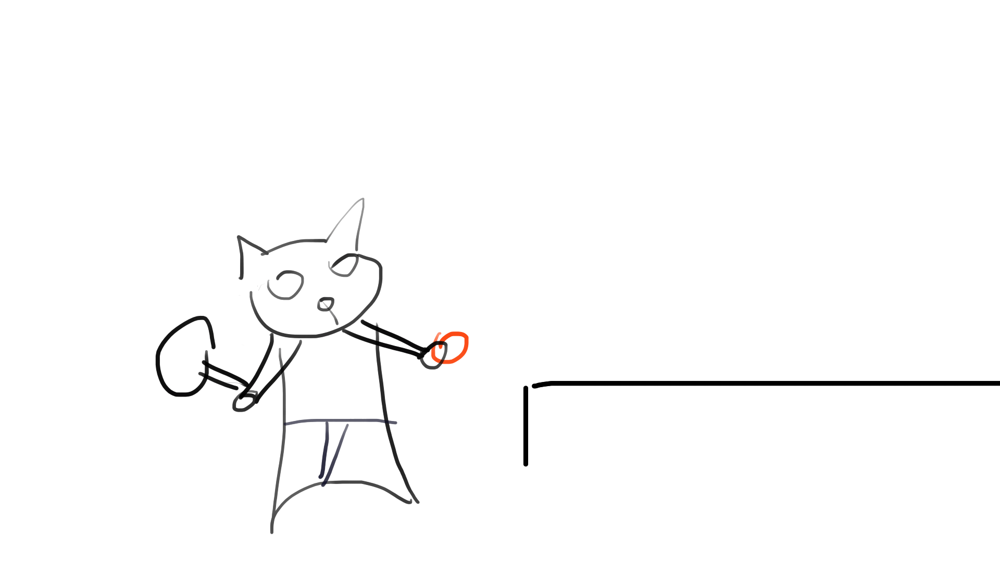

2D動畫練習 人物動作捕捉嘗試
本作品為原創角色動畫練習，透過簡單的線條角色與道具，嘗試呈現角色動作的節奏感與情緒反應。 內容包含兩段獨立動畫，皆以生活中熟悉的主題出發，如打球或日常互動，透過動作設計與逐格繪製，練習角色動態表現與畫面時間控制。
製作重點 流程與挑戰
兩部動畫皆面臨角色動作不流暢、影格時間抓不準、關節連接不自然等問題，透過參考真實動作與動畫示範修正完成。
第一組練習強調走路節奏，第二組練習則著重轉身與手部動作的反應。這次練習幫助我熟悉逐格繪製與時間軸控制邏輯。
軟體工具： Krita
處理方式： 手繪影格、背景搭配、輸出為靜態動畫圖組
動畫影格展示 動畫 1 / 2
以下為第一組動畫的完整影格（共 10 張），展示角色基本移動循環。